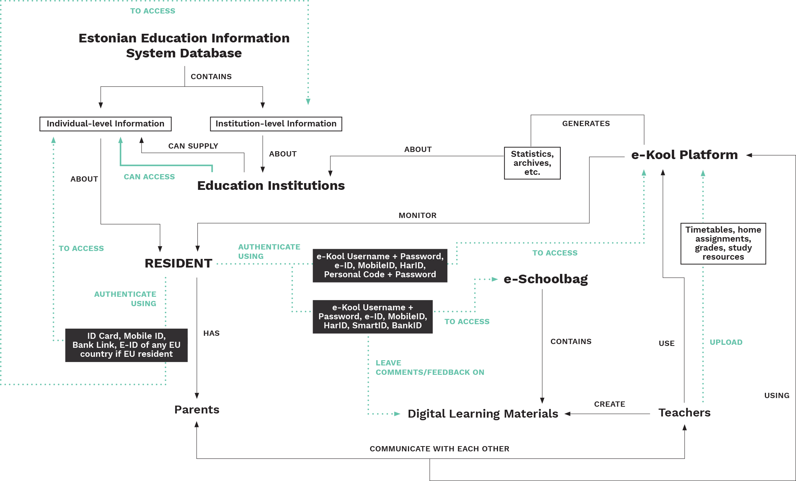

Research Plan
Over the last few years, several digital identity schemes have been initiated in different countries across the world. There has significant momentum on digital ID, especially after the adoption of UN Sustainable Development Goal 16.9, which calls for legal identity for all by 2030. Instances of emerging new digital identity schemes include national projects in Algeria, Belgium (mobile ID), Cameroon, Ecuador, Jordan, Kyrgyzstan, Italy, Iran, Japan, Senegal, Thailand, Turkey, major announcements in Afghanistan, Denmark, the Netherlands, Bulgaria, the Maldives, Norway, Liberia, Poland, Jamaica, Sri Lanka, Zambia and a pilot scheme in Myanmar. The nature of choices made towards the creation of a digital identity system have significant consequences for privacy, security, inclusivity, scalability, fraud-detection capabilities and implementation costs of the framework. These choices exist in the context of a complex set of political, legal, technological, economic, and societal factors. Similarly, how and where the digital identity systems are used needs to also be informed by ethical, economic and legal factors.
Defining Digital Identity
In this project, we rely on the definition of digital identity, articulated by Dave Birch et al, as any system where identification (the process of establishing information about an individual), authentication (the process of asserting an identity previously established during identification) and authorisation (the process of determining what actions may be performed or services accessed on the basis of the asserted and authenticated identity) are all performed digitally. This is what we mean when we use the term digital identity. In that regard, we disagree with some of the other definitions such as the one formulated by ID4D, where authorization is defined as the process of determining whether a person is ‘authorised’ or ‘eligible’. On the other hand, we view authorisation as the use of the digital identity by an individual to allow activities to conducted on their behalf. In this regard, the definition we use holds the individual at the centre of the three core processes.
Research Questions
The two primary research questions that we aim to answer in this project are as follows:
Appropriate Uses of ID
When should digital identity be used?
To answer this question, we will arrive at principles on the basis of which the use of digital identity systems can be evaluated.
Technological Design of ID
How can its technological and policy design be determined?
For this, we will conduct research into the technological and policy design options available, and which a decision-maker can use to work through the wide menu of options.
Research Approach
Some of the core research activities that we intend to undertake in order to answer the two above questions are legal analyses of uses of identity systems against rights such as privacy and inclusivity; use of risk assessment frameworks to evaluate the harms and benefits of uses; systems mapping of existing or planned identity systems and the data flows and relationships between entities; economic analysis of cost drivers of digital identity systems; mapping and analysis of core technologies that are used in digital identity systems and analysis of core policy choices that can be made. Making appropriate design choices can ensure that states build digital identity frameworks, which explicitly offer privacy protections for individuals, have security features built into it, have ID credentials that are accurate and provide control to the individual, are inclusive of all demographics and are cost-effective.
Research Plan
Towards the first research question on appropriate uses of digital identity systems, we worked on sixteen principles, which were articulated in our first draft evaluation framework. While we have begun from a first principles approach, in subsequent drafts, we will identify the core definitions, legal tests and applications of these principles. We will also look at real-life examples of uses of digital identity systems, and use our framework to see how they may be evaluated against it. The evaluation framework will be informed by legal theories, literature on harms based approaches, risks assessments and technological research.
Many identity schemes have historically arisen in the physical domain. Some schemes today are also strictly designed for online use. Governments’ uses of identity systems include voting; border control; tax registration; proof of age (access to alcohol, tobacco, sexually explicit materials, etc.) licences (driver’s licence, etc.); law enforcement and justice system and proof of identity in miscellaneous legal circumstances (witnesses, defendants, litigants); social security registration; and healthcare (proof of entitlement/insurance and/or access token for medical records). There are also commercial domains within which the use identity systems has become prominent: online and offline banking; identity in high-value transactions and contracts; facilitating and validating digital signatures; online identity in e-commerce; and employee identities and payroll numbers.
We will look at various considerations for how digital identity systems are used: public v. private purposes; mandatory v. voluntary; extent of data collection involved and how privacy is impacted; who benefits from the digital identity; is profiling enabled; who accesses the data and for what purpose; what are the risks and benefits.
ERAF Model for Use of Digital Identity in the Education sector in Estonia
This work-in-progress diagram shows the key stakeholders, relationships, flows and attributes in the use of digital identity in the education sector in Estonia
Research by Shruti Trikanad
Mapping by Pooja Saxena

ERAF Model for Use of Digital Identity in the Education sector in Estonia
This work-in-progress diagram shows the key stakeholders, relationships, flows and attributes in the use of digital identity in the education sector in Estonia
Research by Shruti Trikanad
Mapping by Pooja Saxena
Towards the second research question about technological design and policy options for digital identity systems, we have first identified a set of existing and planned digital identity systems that represent a paradigm of how such a system can be envisioned and implemented. Each is being studied using a systems thinking approach using the ERAF technique. Within each paradigm, the three core processes – identification, authentication and authorization – are being mapped, along with sectoral use cases. The ERAF technique involves mapping the ‘entities’, ‘relationships’, ‘attributes’, and ‘flows’ in a system. ‘Entities’ could be any institutions, regulations, technologies, individuals, information, or objects that are part of the system. ‘Relationships’ trace how these entities are connected to each other. ‘Attributes’ describe the nature of the entities. Finally, ‘flows’ depict the direction and type of transaction between entities. Through these maps, we are able to clearly identify what competing visions of digital identity systems could look like. In addition, we can pin-point leverage points (places in a complex system where a small shift can produce a big impact) in the systems, where different design choices are causing divergence in paradigm.
To complement the systems maps, we will also develop stakeholder journey maps, which will illuminate the specific objectives and the challenges of different stakeholders within the system. On the basis of the lived experiences of residents in different countries with digital identities, their existing journeys will be mapped to highlight the obstacles in using digital identity or accessing services at different points of interaction with the system. Maps will also be created for stakeholders like the issuing authority and its service providers, as well as private-sector actors. Along with the systems maps, the journeys will be key in understanding digital identity systems as complex sociotechnical systems, where there are competing requirements from diverse stakeholders. Assessing these requirements is essential because it is possible that the choices made towards achieving one objective may conflict with those towards another objective. For instance, collection of multimodal biometrics may ensure greater uniqueness through more effective de-duplication, however it would also end up creating more data vectors that may lead to privacy and security risks. Similarly, while privacy enhanced smart card with cryptographic features may be a sophisticated solution, they will not be cost-effective compared to a paper based ID credential. The identification of such leverage points will help us further in determining junctures where different design choices can impact the outcomes of the digital identity system.
These research plans will be updated as we conclude some of the activities mentioned above, as well as when we adopt new learnings, which may influence our thinking and methodologies.